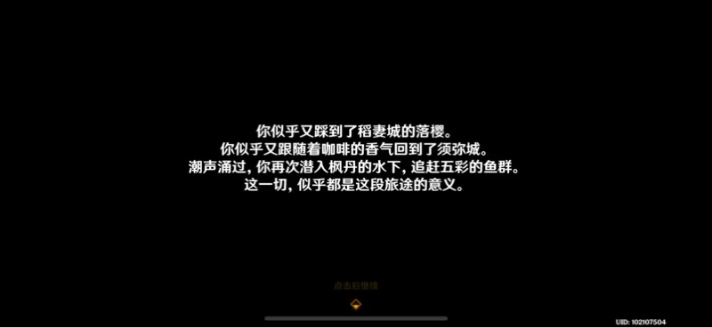
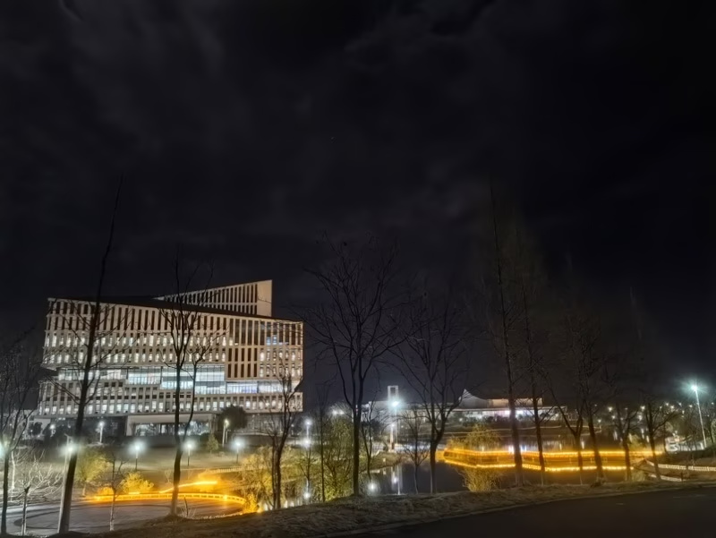
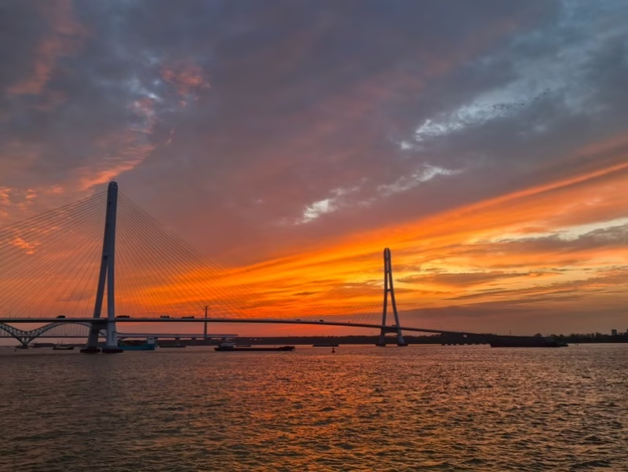
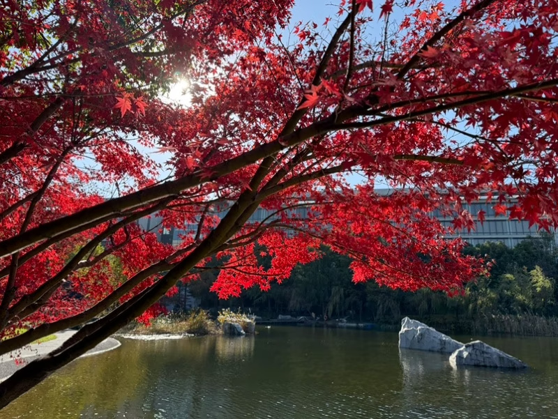
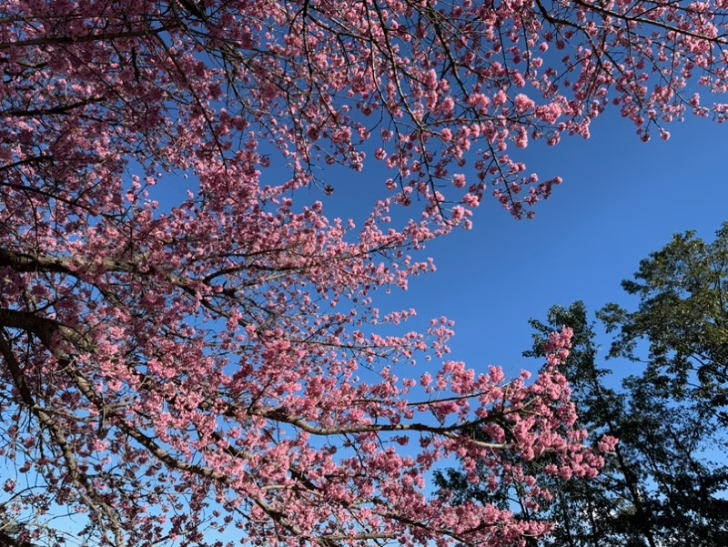

# 2024：我们如今所经历的日常，真的是寻常吗？
日々私たちが过ごしている日常というのは、実は奇迹の连続なのかもしれん。——ささはら こうじろう
我们所经历的每个平凡的日常，也许就是连续发生的奇迹也说不定。 ——笹原幸治郎

# 按 此时此刻恰如彼时彼刻
在一年接近于结尾的时候，写一篇漫长的文章去总结过去这一年，这个习惯大概始于2019年。五年过去了，那年发生的一切仍在或多或少影响着我，那年所认识的人们仍在我的生活中徘徊。经历了三年疫情的封锁，经历了各行各业泡沫崩塌，一切的一切之后，2024，又是什么样子呢？
2019年的开始，是大A在2014年11月以后十年以来的最低点，2440.91。那年的美国总统是特朗普，那年的法国总统是马克龙，那年的俄罗斯总统是普京。那年的贸易战打的国内丢盔弃甲，那年的516拉开了华为舆论场封神的篇章。
2024年的开始，是大A自2019年1月以后五年以来的最低点，2635.09。美国的下一任总统特朗普在完成惊天逆转之后即将上台，法国总统马克龙在弹劾声中度过了他的第七年总统生涯，俄罗斯总统普京在俄乌战争的硝烟里再一次巩固了自己的统治地位。贸易与金融的纷争在全球范围愈演愈烈，纯血鸿蒙的横空出世则将为这场战役打下一个新的里程碑。
而生活在历史之中的人，并不能意识到自己会成为历史的一部分。正所谓，我们所经历的每个平凡的日常，也许就是连续发生的奇迹。

# 一 人潮似浪涛来而复往
5:30，长江路，网巾市。
凌晨五点半的长江路不出意外的空无一人，街道上的车流间或来来往往，每个人都有每个人的故事，每个人都有每个人的苦涩。
白天的长江路，是总统府前各路旅行团摇旗呐喊，是黄牛与摊贩和城管斗智斗勇，是往来拍照的游客络绎不绝。夜晚的长江路，曾是1912酒吧街的灯红酒绿，曾是九中学子放课后的嬉笑打闹。东大附中的学子终究没有几个能考上东南大学，而如今的1912也因产权纠纷而行将倒闭。
我已经很久没有在这里驻留了。
如果说昔日的我并不能理解当时的老师为什么如此的傲慢，甚至于直截了当的大开嘲讽。如今当了几年社畜的我已然明白，这些在公立高中里拿着丰厚工资还能明目张胆大收补课费的无孩爱猫女老师，才是这座师医公之城里无冕的王。
一个版本有一个版本的英雄，一个阶段有一个阶段的版本理解。从前我不理解为什么会有人愿意接受体制内的低工资，也不理解为什么会有人愿意放弃互联网的高工资选择华为。现在我逐渐明白，不是所有人都热爱金钱，也有人更在乎名誉，在乎生活，在于一切一切，除了金钱以外的东西。
现在已经很少见大学以前的朋友了，大家走在不同的路上，过着不一样的日子。大学以后认识的人的话，大家或多或少还在一个行业里，有那么些许交集。但套用今年某虚拟主播一个很典的话来说，我已经不做关于学校的梦了，我现在觉得我就是社畜。
仔细想来，今年所见的外地朋友们好像依然是五年前认识的那批，每个人见的次数大概也是屈指可数的。刘老板四次，三次沪国，一次宣城；典王三次，两次深圳，一次沪国；总裁三次，两次深圳，一次芜湖；汪学姐两次，一次沪国，一次杭州。剩下的人基本上只见了一次，大约是在宣城、在西安、在东莞、在深圳，就不细数了。
春天里回了几趟宣城，参观了wdr的流浪新家，参观了搬迁302A的电设。去三年没去过的彩金湖畔看烟雨朦胧，在新港国际的大草坪上躺着晒了晒太阳。见到了认识了好几年但从来没见过的文法学妹，第一次见，也可能是最后一次。
下半年人际方面最大的成就大概是给组里招了几个人，一个是认识了五年的kk，一个是我和kk在智科的共同朋友的同班同学。在组里搞起了熟人社会，也顺利混上了人缘奖明日之星。虽然能力在组里属于比较烂的，但是只要刷脸刷的够多，什么事都有我的份，那么日子也不是不能好起来。添翼大佬完成了在南理工的学业，在隔壁友商那里当上了跟我差不多的社畜。不时去蹭个饭啥的，也是相当不错的体验。
华为的offer逐步开奖了，明年大约又将有一批熟人来到华为，甚至是来到终端云。也许明年会更经常的去青浦转转吧。海浪会来，生活总会继续，希望在2025年，我们见到的，都是更好的我们。

# 二 江湖路远而回忆常在
6:05，玄武大道，长途东站。
沪宁城际的早班动车呼啸着驶出南京站，两个小时后，他将到达上海市中心的上海站，将跨城上班的社畜、跨国出行的旅人一一发送到他们行程的终点。
今年给12306贡献的车票有100多张，其中有20多次是在沪宁城际上奔驰，还有将近20次是在宁杭高铁，10次左右的京沪高铁沪宁段和10次左右的南沿江城际。大部分的时间里忙忙碌碌，也只在沪宁杭之间奔波。走过一年四季的杭州，看早春的西溪湿地、初夏的九溪烟树、中秋的钱江大潮、初冬的运河游船；走过四面八方的上海，看新年初至的嘉兴路、樱花绽放的顾村、人潮汹涌的BW、浩瀚辽阔的滴水湖、枫叶乍红的金山廊下。
今年是追日落的一年。从宜兴周铁走向日暮的太湖湾，看光芒渐渐消失在水里。在澳门半岛的主教山上，静静看着日暮里西湾湖边烟花绽放。大巴从旺角坐到屯门，在青山公路看窗外汀九桥的微光。新年的欢乐港湾人潮如织，等位失败就只能看晚霞落入远方的鹅岛。同里古镇的傍晚灯火辉煌，映得暮色时分反而更加亮堂。太湖湾音乐节上，黄昏时分的周柯宇唱了一首黄昏晓，金色的日光映照起金色的摩天轮。无数精彩的日暮，串起精彩的一年。
日落最美好的夏天，是鱼嘴湿地、石臼湖边、金鸡湖畔、南研所前，是去机场的地铁列车上、天安云谷的37楼天台、长江之上的豪华游轮、玄武湖的荷花走廊，还有舟山长峙岛的摩天轮日落、东海大桥的海上日落，以及江心洲灯塔最盛大的晚霞。而秋天的暮色，青西郊野公园、溧阳高铁站、无锡三国城，江豚湾、羊山湖、三河古镇、阳澄湖半岛，也毫不逊色。
值得记忆的还有很多，还有春花，还有秋叶，还有烈日下的西安，还有深圳的海连岛的海，还有雁荡山的山风与彩虹，还有一切的一切...最终化作相册里的6000多张照片，化作空间、朋友圈和微博，还有b站的差不多40个plog。我似乎并没有太多太好的方式去记录当下的一切，大概只能把它塞进我的相册里吃灰，直到有一天我再想起，把那一段过去从相册里捡出，但那也不知道是多久以后的事情了。
平心而论，工作第三年的我，并没有多大的兴趣去进行长途旅行。一个人的行程最适合的，大概还是当日往返的短途郊游。一整年的时光，长途旅行的次数屈指可数，三次粤港澳大湾区，五月的西安十月的北京，一共五次而已。其他的时候都在江浙沪皖兜兜转转，最远不过连云港、雁荡山，除了舟山基本上都可以当日往返。或许我最适合的，还是在新港国际的大草坪上躺着晒晒太阳。什么也不想，什么也不做，就这么安逸着，也是如今的我可遇不可求的时光。
关于「旅程」的一切，似乎并不应该在这里说太多。每一趟旅程并不一定都有他的意义，但总归为名为人生的大旅程里增添了一点点回忆。愿此行，终抵群星。
# 三 未若无因飘落的烟雨
6:50，栖霞大道，南京炼油厂。
云霞渐渐消散，取而代之的是一眼望不到尽头的红色尾灯。旁边的京沪铁路上，货列缓慢而匀速的驶过，仿佛是在对这条堵车长龙无声的嘲讽。驶出拥堵路段之后，快速路上狂奔的轿车也许终将追上爬行的货列，但那早已不知是何时何地。早在那一刻来临前，或许大家已经转向了不同的目的地。
今年的我终于收获了我在第一年里所期待的一切：升级、加薪，还附赠了一次与曾经的领导们一起同台发言的机会。倘若是三年以前，我也许会万分欣喜，会鼓足工作的干劲。可惜冻结了三年之后，我对这一切不再像从前一般的有兴趣。如今的我，想要的是一份不需要耗费太多精力的工作，从事一种水生生物基于人类肢体触碰的研究（俗称摸鱼）。
南京不是一个适合发展事业的地方，他有着相对不高的天花板，相对激烈的竞争环境，和相对发展较烂的外部行情。放眼望去，离开华子甚至没有什么能接的住我工资的地方，哪怕我现在的工资在行业内并不高。去年回来的想法大抵是出于一种，累了，休息一段时间再出发。但是这一年也这么跌跌撞撞的过来了。
去年我来的时候，我们团队应该是只有16个人。5个在深圳，11个南京，其中5个都是刚来。一年过去，深圳搬到了东莞，走了1个，来了2个；南京走了2个，来了2个，还有一个隔壁部门调过来接活的。在北京开辟新据点，并且招了6个。现在我们团队有24个人，相当于扩编了50%，所以我的资历在团队里甚至也可以排到差不多前50%，不得不说有一种啼笑皆非的感觉。
我们团队的另一个神奇的特色，大抵在于海纳百川。整个团队正儿八经归属本部门的校招生只有两个，哪怕社招也只有leader一个人是本团队土生土长的，其他全都是从公司各个部门各个团队过来投奔的内招人。因此团队并没有公司里常见的嫡庶之分，也没什么抱团取暖。从目前来看，这种日子过起来还是比较舒服的，但是到面临考评乃至续签压力的时候，又该如何是好呢？
明年团队里有四成的人都要续签了，而我，也是其中的一个。

# 四 待到山花烂漫的春天
8:30，仙林大道，羊山公园。
在栖霞的山门前目送了无数游客向里涌去，然后兜兜转转从摄山去了西岗，最后在仙林大道上沉溺在了一片火红里。并不是越昂贵或者越多人追捧的才是最好的，朝阳之中，火红的枫林里夹杂着些许金色的叶片，与一旁高架上不时掠过的鲜红二号线列车交相映衬。
这一年里，我也遇见了些许令我惊艳的存在，或偶然，或必然。但绝大多数都是互联网之上虚拟的存在，永远也照不进现实之中。现实世界里的我，并不具备与人交往的能力，哪怕有心仪的光亮，也照不透一层绝对的黑暗。
在年末的最后几个月里，虚拟归于了虚无，而现实并没有还原真实。虚拟死在了现实里，真实消散在虚无中。如果说去年我的事业像个笑话，那么今年我的生活也像是一个笑话。把情感倾注于本就不会有结果的事物之上，并奢求带来情绪价值和慰藉。我好像个疯子，却又像个傻子。
正如None不能转化为任何类型，虚无的岁月里给不出任何的叙事主线。回忆如繁星，只剩零零碎碎的点，却串不起哪怕一条纤细的线。我会记起生命里所有的偶然和相遇，记起从空中俯瞰的翡翠湖爱心，记起海边摩天轮上耀眼的落日，记起夜里江上望见的一轮明月，记起五桥之滨染红整片天空的绚烂。但我记不住你，记不住他，记不住生命中一切的路过。
十二月的上海红枫似火，而曾经的上研所、曾经的松江火车站，曾经遍布上海的豪大大鸡排，都渐渐隐入尘烟。练秋湖基地在青西拔地而起，上海松江站接替了老松江站的位置。盗版的豪大大鸡排击败了正豪大大鸡排，但是因为不敌正新鸡排之流被迫流窜在城乡结合部里。
我们终将遗忘一切应当成为过去的过去。

# 尾声 在夜色中远航的旅人
20:30，大理古镇，洱海龙龛码头。
虽然是十二月，但是云南边陲的大理依然仿佛春天。18度的气温，和煦的阳光与盛放的樱花，似乎直接跨越了整个严冬，来到了阳春三月。日暮时分，苍山与洱海一同被阳光染成了金黄色，海鸥在盘旋，浪涛在起舞。红色的水杉林与上海青西一般无二，呈现出深秋所应有的光泽。
平凡的生活总是需要一点passion去调剂，比如在下班之后转三班高铁，耗费20小时一千两百块路费，在第二天的下午两点抵达大理。相比航空，它既不快也不便宜。但是我不用熬夜也不用早起，晚上十一点半郑州南上车倒头就睡，第二天上午可以等到十点甚至快十一点再起。
一个人旅行的日子多了，行程安排就考虑尽可能的松一些，优先考虑自己玩的舒服。杂鱼体力爬不动紫金山，更爬不动苍山，只能看看洱海的风花与月。没有假期的社畜，每一个没有压力的周末都是假期。也许，除了出国，其实两天时间去哪都够了。
云层遮盖落日的余晖/身体需在入夜前麻醉/理性的话太尖锐/冲动终将会消退/不如就随它破碎
我在夜里跳舞/在夜里跳舞/我不想要所有不属于我的归宿/一边在流泪/一边在掩护/最后打消心里对你所有的企图
习惯了一个人，也就很难对感情产生什么莫名的冲动。别人的遭遇出轨，别人的感情失败，也很难给予我什么感怀或是教训。如果有一天真的遇上一个很有感觉的人，那么无论对方是不是渣女绿茶，我大概率还是要去扮演一个忠诚的舔狗，还是会为对方的脚踏n条船而破防。但是，破防也就单纯的破防罢了。无能狂怒之外，我什么也做不了。
不过，反复假设这个行为本身，并没有意义。